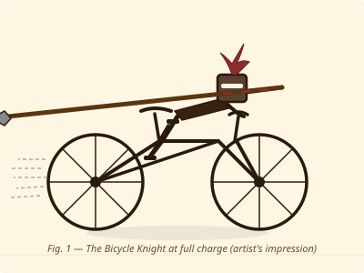

Official Yushinkai demonstration footage (dramatisation).
What Is Bicycle Jousting?
Bicycle jousting — known in elite circles as vélo-jouterie, and in accident reports as "how did you even manage that" — is the breathtaking collision of two of humanity's greatest inventions: the humble bicycle and the unnecessarily long wooden lance.
Two competitors mount their steeds (bicycles, though proposals for recumbent trikes are under active review), don full armour, and charge at each other across a flat arena known as the Liste Cyclique. Points are awarded for:
- Lance contact — striking the opponent's shield, torso, or helmet with the tip of the lance.
- Dismount — causing the opponent to leave the saddle in a dignified arc.
- Style — judges award up to three points for what the scoring rubric formally terms "panache."
- Not falling off yourself — this is harder than it sounds.
The sport traces its origins to absolutely nowhere and was invented in a dojo car park in approximately 2024 by a group of kendoka who had bicycles, disagreements, and insufficiently supervised free time. It has since grown to encompass at least four committed practitioners and a waiting list of curious onlookers.
Field Studies & Artist Impressions
Our in-house illustrators (one person, several cups of tea) have documented the sport's essential forms. These technical diagrams are suitable for framing.

Note the aerodynamic lance grip and heroic plume.
Red vs. Green. Honour vs. Honour. Bicycle vs. Bicycle.
The Unmistakable Virtues of Multi-Discipline Training
At Yushinkai, we have long maintained that the serious martial artist does not confine their practice to a single domain. Kendo sharpens the mind. Naginata extends the reach. And bicycle jousting — well, bicycle jousting very much tests whether the mind and the reach are correctly coordinated while moving at speed toward a determined opponent.
Consider the profound synergies:
- Balance and posture: Years of martial arts practice develop the core stability required to stay upright on a bicycle while a person is actively trying to push you off it. This is not a metaphor. It is a requirement.
- Ma-ai (distance management): In kendo, understanding the interval between practitioners is foundational. In bicycle jousting, that interval closes at approximately 25 km/h combined speed. The lessons transfer directly. The bruises confirm this.
- Kiai and psychological dominance: A well-timed shout at the moment of charge has been empirically shown to cause opponents to flinch, swerve, or in one memorable case, simply stop pedalling and reconsider their choices.
- Zanshin (lingering awareness): After the pass, the jouster must remain alert. Spinning around on a bicycle with a lance is a skill set that traditional zanshin practice did not anticipate but absolutely accommodates.
- Cardio: Kendo does not involve cardio. Cycling does. This is therefore an improvement. Sensei has been informed.
Practitioners who train in both disciplines consistently report improvements in spatial awareness, upper body strength, forward planning, and — crucially — the ability to explain unusual injury patterns to medical professionals with a straight face.
Joining the Bicycle Jousting Programme
Yushinkai's bicycle jousting track is open to all members who have completed at minimum six months of kendo or naginata training. The following equipment and certifications are required before your first competitive pass:
Standard kendo armour. The men (helmet) is especially encouraged.
Road bikes recommended. Penny-farthings accepted with a signed waiver.
3.2 metre bamboo or foam-tipped PVC. Carbon fibre lances pending committee review.
Worn over the men, producing a distinctive layered-headgear silhouette.
Standard kendo tare, plus an additional cycling-specific shin pad. Belt-and-suspenders philosophy.
Or demonstrated ability to ride in a straight line for 20 metres. We are flexible.
All beginners complete three foundational sessions: Stationary Lance Holding, Slow Cycling With Lance, and The Talk About Calling Out Before Charging. This last session is mandatory following Incident Report #3.
The Future of the Sport — A Vision
Bicycle jousting is nascent. It is raw. It is, frankly, still working out whether a scoring judge should stand to the side or considerably further to the side. But the trajectory of the sport is clear, and those who join now will be able to say, in years to come, that they were there at the beginning.
The Yushinkai Bicycle Jousting Development Committee (currently: three people and a shared spreadsheet) has identified the following emerging frontiers:
- eBousting™ — Electric Bicycle Jousting: The introduction of e-bikes raises the approach speed dramatically, the stakes proportionally, and the insurance premiums in ways we are still negotiating. eBousting promises a higher-velocity, higher-drama format for elite competitors and those with no fear of consequences.
- AI-Assisted Lance Targeting: Researchers at an unnamed university (they have asked not to be named) are developing real-time trajectory analysis software that predicts lance contact probability within 200 milliseconds of the charge. Opponents will have 180 milliseconds to react. This seems fine.
- Team Jousting — The Peloton Format: Multiple jousters charge simultaneously in formation, with tactical lancing and rear-guard support riders whose role is to "look after the situation." Team strategy documentation is in progress. It currently consists of the word "charge" underlined twice.
- Indoor Arena Jousting: Discussions are underway to bring bicycle jousting indoors — into the dojo itself. This proposal has been tabled pending agreement on what "tabled" means in this context and whether the walls are load-bearing.
- Olympic Candidacy — 2032: A formal application to the International Olympic Committee is planned. Initial enquiries have been met with silence, which the committee is interpreting as thoughtful consideration. We are cautiously optimistic. Brisbane 2032 has a lot of flat roads.
- Bear-Mounted Jousting: A natural evolution for Yushinkai specifically, given our founding imagery. Awaiting bear volunteers. Bears have so far not responded to posted notices, but we remain open to interest.
The sport of bicycle jousting stands at the intersection of heritage and velocity, of ancient chivalric tradition and modern lightweight alloy frame geometry. It is, in the truest sense, the martial art that cycling forgot it needed — and that cycling will, once it has tried it, be very glad was remembered.
Join the Liste Cyclique
Interested in training? Taster sessions run on the first Saturday of each month.*
Equipment can be borrowed. Dignity must be supplied by the participant.
Register your interest via the training enquiry form →
* Pending confirmation that this is a real programme.
Yushinkai's actual wonderful sports — kendo and naginata — are very much real and very much accepting new members. See the training page.